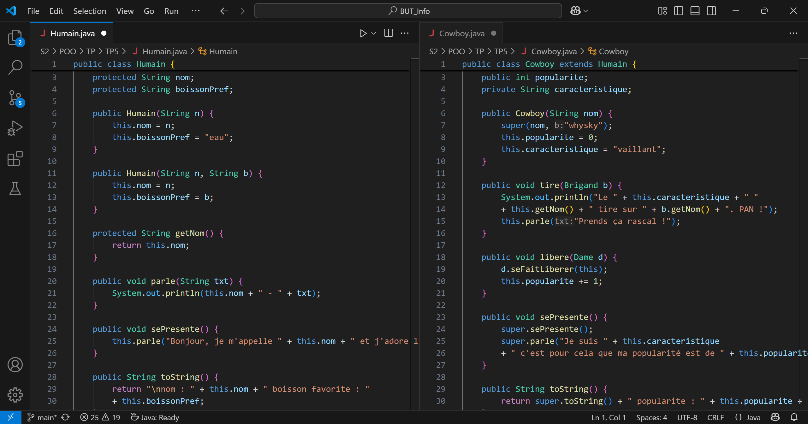

Compétence 2 : Optimiser des applications
Compétence 4 : Gérer des données de l'information
Programmer une interface web (HTML/CSS/JavaScript)

Cette figure montre du code en HTML issu de index.html. Cette page est celle du portfolio et permet de coder une interface web.
On peut voir qu'elle est reliée à une autre page nommée index.css (ligne 8). Celle-ci est une page CSS qui permet de styliser proprement le HTML sur une page annexe afin de rendre le site web lisible, soigné et plus agréable lors de la navigation. Pour faciliter l'accès aux différents compartiments de la page web, on voit que des classes sont utilisées (par exemple à la ligne 13, le body, qui est la "case" principale de la page web, est affecté à la classe bodyMenu). Contrairement aux id, les classes ne sont pas limitées à un seul compartiment (par exemple la case hidden présente aux lignes 19, 22 et 25). De même, les classes peuvent s'ajouter à un même compartiment (à la ligne 17, la "boîte" div appartient à la classe regroupe ainsi qu'à Savoir).
À la ligne 10, on voit également que le HTML est relié à une page nommée script.js. Celle-ci est une page JavaScript et permet d'appeler des fonctions lors d'événements sur la page HTML. Ces méthodes peuvent par exemple modifier des éléments de la page web. Elles sont aussi appelées dans les compartiments du HTML. Par exemple, à la ligne 24, lorsque l'on clique sur cette "boîte" div de cette même ligne, l'événement est capturé (spécifié grâce à onclick) et appelle la fonction page() avec comme paramètre un lien. Celui-ci permet de rediriger la page et donc de poursuivre la navigation sur savoir_faire.html (soit cette page).
Cette figure montre simplement l'utilisation simultanée de pages HTML, CSS ainsi que JavaScript pour permettre une expérience agréable et fluide pour l'utilisateur.
Programmer un site responsive

Cette figure montre la page d'accueil d'un site codé par mes soins, accessible en cliquant ici.
Ce site simple, à but pédagogique, sur le crochet présente différentes pages. Tout d'abord, la page d'accueil avec une présentation du crochet, puis des pages "points", accessibles depuis la barre de navigation, répertoriées par niveaux. Ces pages "points" montrent chacune une technique de crochetage grâce à un tutoriel accessible sur le site, renvoyant à une vidéo disponible sur YouTube. On peut retourner au menu du site en cliquant sur la pelote de laine faisant office de logo, présente à gauche de la barre de navigation.
Ce site est un exemple d'interface web responsive (c'est-à-dire qui s'adapte à la taille de la fenêtre dans laquelle il est affiché). En utilisant des unités non fixes (par exemple en privilégiant les pourcentages aux pixels) pour les différents compartiments du site, celui-ci reste toujours accessible et agréable à la navigation. Ainsi, peu importe la taille qui lui est allouée, l'affichage du site ne déborde pas et s'adapte.
Programmer un site s'adaptant à différents formats

Cette figure montre la page d'accueil d'un site (le même que le block précédent) codé par mes soins, accessible en cliquant ici.
Ce site simple, à but pédagogique, sur le crochet présente différentes pages. Tout d'abord, la page d'accueil avec une présentation du crochet, puis des pages "points", accessibles depuis la barre de navigation, répertoriées par niveaux. Ces pages "points" montrent chacune une technique de crochetage grâce à un tutoriel accessible sur le site, renvoyant à une vidéo disponible sur YouTube. On peut retourner au menu du site en cliquant sur la pelote de laine faisant office de logo, présente à gauche de la barre de navigation.
On voit que la forme de la barre de navigation de la page d'accueil diffère de celle de l'image du bloc précédent. En effet, ce site change légèrement de format lorsque la taille de la fenêtre change. Par exemple, en réduisant la largeur de la fenêtre, la barre de navigation devient verticale et non plus horizontale. De même, lorsqu'on élargit beaucoup la fenêtre, les compartiments d'images se disposent différemment dans l'espace (deux par ligne) et la disposition du texte par rapport à celles-ci change : il est placé à côté lorsque la fenêtre est de petite taille, et à la place de l'image lorsque la fenêtre est plus large. Ces modifications sont réalisées à l'aide de media dans la page CSS associée. Elles n'ont pas lieu en même temps et permettent une meilleure adaptabilité de l'écran aux différents formats (smartphone, tablette, ordinateur, ...) et ainsi facilitent et améliorent l'expérience utilisateur.
Lier un site web avec une base de données (MySQL)

Sur cette figure, on distingue deux parties. Celle de gauche montre du code, tandis que celle de droite montre le site résultant de ce projet. Ce projet a pour objectif d'utiliser un framework (ici Flask) afin de lier une base de données à une interface web. Ce site peut être comparé à un catalogue simplifié de voitures.
Sur la partie gauche, on observe une requête vers la base de données (en langage MySQL). Cette requête s'étend de la ligne 222 à 236 et retourne les éléments présents dans la table Voiture. On récupère ainsi l'id (numéro d'identification), le nom, la date de lancement, le prix, la puissance, la photo ainsi que la catégorie associée à la voiture. Après avoir été récoltées, ces informations sont ensuite utilisées afin d'être affichées dans un tableau, comme le montre la partie droite de la figure.
Cette image résulte donc d'un lien entre un site web et une base de données, ici MySQL.
Modifier une base de données (MySQL) depuis un site web

Sur cette figure, on distingue deux parties. Celle de gauche montre du code, tandis que celle de droite montre le site résultant de ce projet. Ce projet a pour objectif d'utiliser un framework (ici Flask) afin de lier une base de données à une interface web. Ce site peut être comparé à un catalogue simplifié de voitures.
Sur la partie de droite, on voit les différentes informations reliées à la voiture Citroën DS3, avec son nom, sa date de lancement, son prix, sa catégorie, sa puissance, ainsi que sa photo associée. Les valeurs affichées sont celles initialement reliées à la voiture. Ces informations sont accessibles via des champs textes ou différents sélecteurs (format d'agenda pour la date de lancement ou liste déroulante pour la catégorie). Ces champs sont donc modifiables. Lorsqu'on valide les potentielles modifications à l'aide du bouton Modifier, une requête est envoyée vers la base de données (partie gauche de l'image).
Tout d'abord, les différents changements sont sauvegardés dans des variables (ligne 351 à 357), puis une requête a lieu au sein de la base de données (en MySQL, ligne 362 à 371). Les informations initiales relatives à la voiture sont alors modifiées (à l'aide de SET) et les nouvelles valeurs lui sont affectées.
Cette figure met donc en avant l'accès et la modification d'une base de données reliée à un site web.
Filtrer une base de données (MySQL) depuis un site web

Bla Bla Bla Bla Bla
Utiliser des cookies sur un site web

Bla Bla Bla Bla Bla
Programmer en Java
Cette figure montre deux classes Java : l'une nommée Humain (à gauche) et l'autre Cowboy (à droite).
La classe Humain possède deux attributs : le nom et la boisson préférée de l'humain. Elle possède aussi deux constructeurs qui diffèrent par leurs paramètres et leur affectation. Quatre méthodes y sont présentes : getNom (en protected, pour que seuls les objets de type Humain ou ceux en héritant y aient accès), qui renvoie le nom de l'humain ; parle, qui affiche le nom de l'humain avec le texte qu'il dit ; sePresente, qui présente l'humain avec son nom et sa boisson préférée (en utilisant la méthode parle) ; et une méthode toString, qui renvoie les informations relatives à l'humain.
Quant à elle, la classe Cowboy hérite de la classe Humain et donc de ses méthodes et attributs. De plus, au cowboy sont associées sa popularité et sa caractéristique. Son constructeur réutilise donc celui de la classe Humain (à l'aide de super()) et ajoute une popularité et une caractéristique au cowboy. Les méthodes de cette classe sont tire et libere, qui prennent en paramètre d'autres classes (Brigand et Dame) qui héritent elles aussi de Humain ; sePresente, qui utilise la méthode du même nom de la classe mère Humain et y ajoute la caractéristique et la popularité du cowboy ; et la méthode toString, qui fait de même.
Ce simple exemple montre l'utilisation des gestionnaires d'accès (ici public, private et protected) ainsi que l'héritage en Java. Il illustre aussi la surcharge (avec les deux constructeurs de la classe Humain) et la redéfinition (avec les méthodes sePresente et toString, qui sont toutes deux écrites dans Humain.java et réécrites dans Cowboy.java).